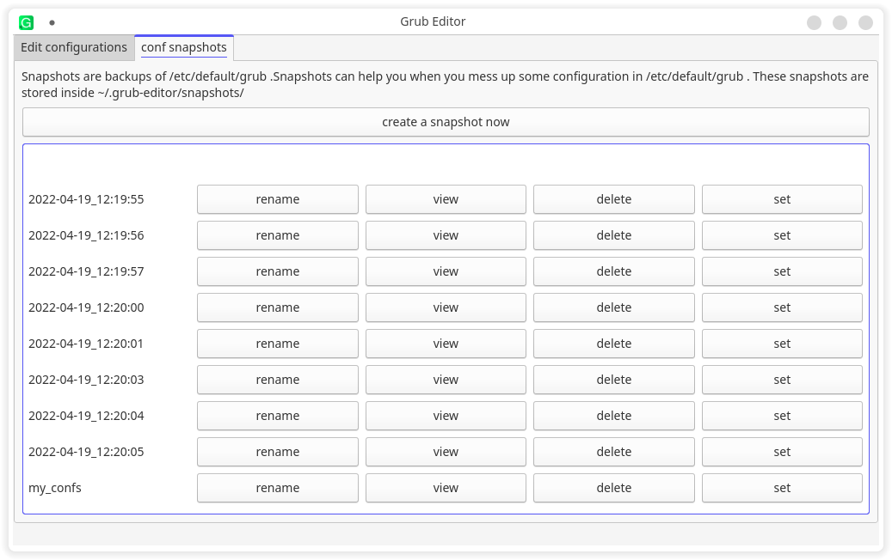
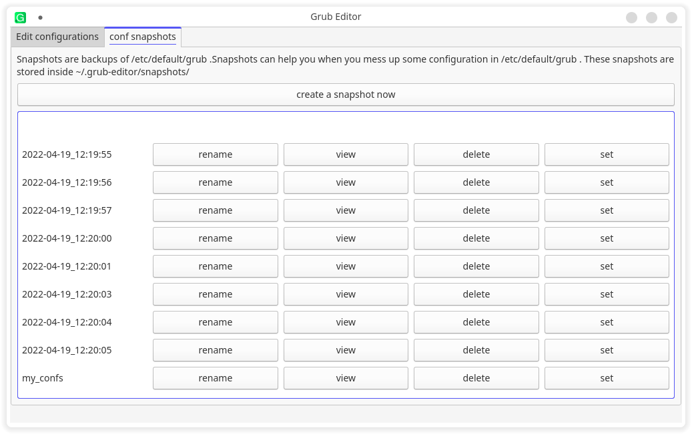

No need to edit /etc/default/grub manually
Grub Editor allows you to customize grub with a graphical application(Not a text editor😉)
 

How does it work?
Unlike the grub customizer, grub editor performs the edits to etc/default/grub and then calls update-grub or grub-mkconfig to update /boot/grub/grub.cfg. It is much more safer than editing /boot/grub/grub.cfg directly as it cannot leave the system in an unbootable condition.
It currently uses pkexec to execute commands that require sudo permissions as i don't know how to use polkit to elavate permissions 😅.
Download

Arch linux and it's derivatives
It is in AUR as grub-editor.
You can use a package manager like pamac to install or you can execute the commands below
git clone https://aur.archlinux.org/grub-editor.git
cd grub-editor
makepkg -si

fedora
We currently do not have a fedora release